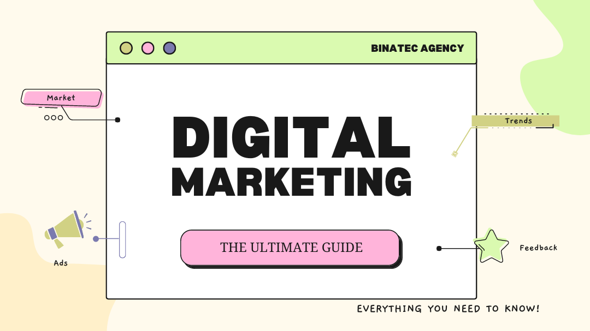

Last Modified: March 5, 2023

In today's competitive business landscape, Digital Marketing is an essential tool for businesses to succeed. Digital Marketing involves the use of online channels such as search engines, social media, websites and email campaigns to reach potential customers and drive sales. It is a powerful way to increase brand awareness and engage with audiences in new ways that traditional marketing cannot achieve. Digital Marketing can help you attract more leads, convert them into customers and retain those customers over time. With its ability to target specific demographics with tailored messages at scale, Digital Marketing can be a valuable asset in helping your business grow.
It is an essential part of any modern business strategy, as it allows companies to build relationships with potential customers and increase visibility online. By utilizing digital marketing techniques such as search engine optimization (SEO), content creation, social media campaigns, email marketing, and more, businesses can create an effective online presence that will lead to increased conversions and sales. Digital marketing also helps businesses stay ahead of the competition by giving them access to data-driven insights into customer behavior which they can use to tailor their strategies for maximum impact. With so many advantages on offer, it’s no wonder why digital marketing has become such a popular choice for businesses looking to grow in today's increasingly competitive marketplace.
With digital marketing strategies like SEO (Search Engine Optimization), PPC (Pay Per Click) advertising, content marketing and more; businesses can tailor their campaigns to meet their specific needs and goals. In this article we will explore how digital marketing can help your business grow and succeed.
Digital marketing is one of the most effective ways for businesses to reach a wider audience. With digital marketing, you can reach a larger pool of potential customers without having to increase your advertising budget significantly. You can use various digital channels, such as search engines, social media, email, and more, to spread your message and engage with your target market. This type of marketing is particularly useful for businesses looking to expand their reach and boost their brand awareness.
Digital marketing is an essential tool for businesses of all sizes to increase their reach and connect with potential customers. By utilizing search engine optimization, social media marketing, PPC advertising, and other digital channels, you can ensure that more people are aware of your business and what it has to offer. This will help you gain more customers, build your brand, and increase your sales.
Digital marketing is incredibly cost-effective when compared to traditional marketing strategies. For example, you can create targeted ads on social media platforms that are tailored to a specific audience, which means you don't have to pay for a large billboard ad or radio ad that reaches an entire city. Additionally, digital marketing campaigns can be implemented quickly and easily with the help of digital tools like analytics software, so you can track the effectiveness of your campaigns in real-time. Finally, because digital marketing campaigns are usually tracked and reported, you can make changes as needed without wasting money or resources.
Digital marketing allows you to target your ideal customer base with precision. You can segment your audience according to demographics, interests, and behaviors. This enables you to create a laser-focused message for each segment, increasing the likelihood of reaching the right people.
With traditional forms of marketing, such as radio and print, you are limited in your ability to segment audiences. By using digital marketing tactics such as display advertising, email marketing, and social media, you can target a very specific audience.
This allows you to get your message in front of the right people, while minimizing the money you spend on advertising. Additionally, you can use analytics to measure the effectiveness of your campaigns and adjust them accordingly.
By targeting the right audience with precise messaging, you can ensure that your campaigns will be successful and that your return on investment is maximized. Digital marketing is an incredibly powerful tool for targeting the right customers.
One of the major advantages of using digital marketing is its ability to generate leads more easily. Digital marketing provides a wealth of opportunities for generating leads, including content marketing, social media campaigns, search engine optimization (SEO), email marketing, and more. These tactics can help to bring in leads that are more likely to become customers. Overall, digital marketing provides a range of tactics that can be used to generate leads. Whether it's content marketing, social media campaigns, SEO, or email marketing, digital marketing can help you reach potential customers more effectively and generate more leads for your business.
One of the key benefits of digital marketing is that it can help you increase conversion rates. Conversion rate is the number of people who take action, such as buying your product or service, after seeing your ad. It's an important metric to measure the success of your digital marketing efforts.
To increase conversion rates, it's important to understand your target audience and create content that resonates with them. You should also focus on creating a great user experience on your website, so customers can easily find the information they need and make a purchase decision quickly. Additionally, using A/B testing can help you determine which versions of your content will generate the best results and ensure you're targeting the right audience.

When it comes to growing your business, building brand awareness and equity is essential. Digital marketing allows you to reach more people with a unified message, allowing your brand to become more recognizable in the market. Through content marketing, social media campaigns, influencer partnerships, search engine optimization, and other digital strategies, you can increase brand awareness and build a positive reputation for your business.
Customer satisfaction is one of the most important aspects of any business. This is why digital marketing is a great tool for enhancing customer satisfaction. Digital marketing allows businesses to connect with their customers in real-time, allowing them to respond quickly to customer complaints and inquiries. Additionally, digital marketing gives businesses the ability to send out personalized messages, giving customers a feeling of being valued.
Improving ROI (return on investment) is one of the most attractive benefits of digital marketing. With traditional marketing, it’s difficult to measure ROI accurately. However, with digital marketing, tracking and analyzing data is easy and this helps businesses understand what works and what doesn’t. With digital marketing campaigns, you can easily track user engagement, clicks, conversions and more, which gives you a better understanding of your campaign performance. This information can then be used to further refine your campaigns in order to achieve the highest possible ROI. By optimizing your campaigns for the best ROI, you can maximize your return on investment and increase profitability.
When it comes to digital marketing, one of the most important benefits is the ability to measure the results easily. Digital marketing allows you to track how users interact with your website and campaigns. This gives you valuable insight into the effectiveness of your digital marketing efforts. You can monitor metrics such as the number of visitors to your website, the time spent on each page, and even the number of people who convert from leads to customers. By measuring these metrics, you can gain an understanding of which digital marketing strategies are working and which ones need improvement.
With this data, you can make informed decisions about which channels to focus your efforts on and which ones to scale back or eliminate. This helps you get the most out of your budget and ensure that your marketing efforts are generating the desired results. You can also use the data to tailor your content to the needs of your audience, making sure they get the most relevant information. Ultimately, measuring the results of your digital marketing efforts is key to ensuring that your campaigns are successful and your ROI is maximized.
Digital marketing is all about facilitating two-way communication between businesses and customers. By using digital tools, businesses are able to effectively reach out to their target audience and understand their needs better. Digital marketing also allows customers to communicate directly with the business, helping businesses create a more meaningful connection with their customers.
Customer loyalty is one of the most important elements for any business. With digital marketing, businesses can build long-term relationships with their customers. Digital marketing allows businesses to create campaigns that are tailored to individual customers and their needs. This creates an opportunity to reward loyal customers and encourage them to continue using your services.
Having strong customer relationships is essential for any business, and digital marketing can help you do just that. With digital marketing, you can interact with customers directly by responding to their questions, comments, and concerns quickly and effectively. You can also use targeted content to address the needs of specific customers in an effort to build stronger relationships with them. Additionally, digital marketing can be used to encourage customers to leave reviews and provide feedback about their experience with your brand, allowing you to get a better understanding of your customer base. By leveraging digital marketing to establish better customer relationships, you can create loyalty among your customers and even turn them into ambassadors for your brand.
Digital marketing is a powerful tool for driving sales. With targeted campaigns, you can reach your ideal customer and present them with a compelling offer that will help increase your conversion rates. You can also use retargeting to increase the likelihood of conversions. Additionally, digital marketing allows you to track each customer’s journey so you can adjust your campaigns as needed. This is important as it allows you to identify what works best and optimize your strategy accordingly.
Digital marketing helps businesses stay ahead of their competition. It gives them the edge to stand out from the rest, gain visibility and attract more customers. This is because digital marketing allows businesses to create content that will reach the right target audience and be seen more quickly than traditional marketing methods. With the help of digital marketing, businesses can customize their ads and content to suit different needs and preferences of their target customers, giving them an advantage over their competitors. Additionally, digital marketing strategies can also provide insights into how customers are engaging with your brand, allowing you to make timely changes and adjustments in order to further boost your competitive advantage. This can be done through various methods such as testing different campaigns to determine which one works best for your business, analyzing customer feedback and monitoring your competitors’ activities. By doing so, you can stay ahead of the game and maximize your chances of success.